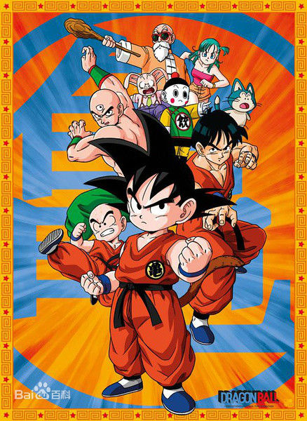
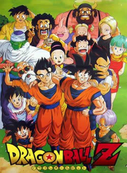
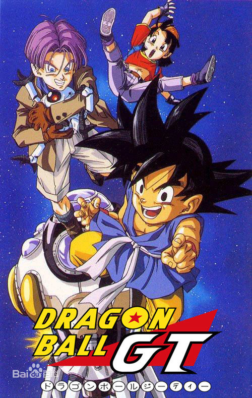
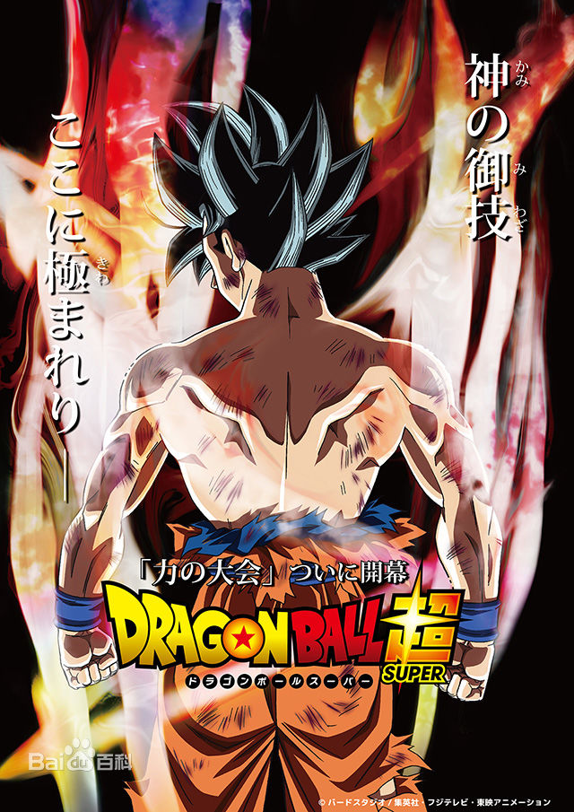

| 漫画 | 动漫 | 人物 | 电影 | 游戏 |
|  | 龙珠：1986年播出 独自住在深山的少年孙悟空，遇上搜集七龙珠的少女科学家布尔玛，布尔玛为得到悟空拥有的四星七龙珠而带同悟空踏上找寻七龙珠的旅程。 悟空拜武天老师为师学习武术，同时出身少林寺的克林亦拜武天老师为师。两人一起修练，由最初的竞争后来成为最要好的朋友。修练了八个月后两人参加了第二十一回天下一武道会，两人在大会表现活跃，最后分别在四强赛和决赛败在变装参赛的师傅手下。
武道会结束后，悟空为找回属于爷爷遗物的四星七龙珠而独自踏上找寻七龙珠之路。旅途中遇上了正在找寻七龙珠、意图征服世界的红缎带军团，悟空数次破坏红缎带军团的阴谋，打倒多个红缎带军团的高手并得到三颗七龙珠，于是红缎带军团聘用职业杀手桃白白以杀死悟空。悟空为打败桃白白而爬上花梨塔找得猫仙人，猫仙人借超圣水为名训练悟空。三日后悟空武功大进打败折返欲取回龙珠的桃白白。 第二十二回天下一武道会结束后不久，克林突然被杀，悟空所持有的四星七龙珠也被抢走。陷入极度愤怒和悲痛的悟空不理会龟仙人的劝阻独自追捕凶手。龟仙人凭着凶手留下的字条断定凶手是和曾经被龟仙人及鹤仙人的师父封印的比克大魔王有关。 悟空与众人再次参与天下一武道会，大魔王的儿子比克亦为了杀死悟空而出席。匿名参加比赛的牛魔王女儿琪琪在与悟空比赛后订婚；天神则化身成凡人参赛，在与比克战斗时欲以魔封波封印对方时却反被封印。决战时悟空与比克苦战后得到最后的胜利。 |
|  | 龙珠Z：1989年播出 赛亚人篇：悟空的哥哥拉帝兹来到地球，透露了悟空原是战斗民族赛亚人，并抓走孙悟饭威胁悟空一天之内杀死一百个地球人，悟空和比克大魔王联手对抗，然而因为双方实力的差距而陷入苦战。危险之际， 悟空决定同归于尽。最后悟空、克林、悟饭合力打败了贝吉塔， 克林想要杀死贝吉塔时却被悟空阻止，贝吉塔成功坐上宇宙船逃回了宇宙。 那美克星篇：由于赛亚人的侵略，比克等Z战士战死，七龙珠也随着消失，为了让死去的战士复活，克林、悟饭和布玛出发前往那美克星寻找七龙珠。另一方面自称宇宙的统治者弗利沙也为了得到长生不老的生命前往那美克星寻找龙珠，因此爆发激烈大战。弗利萨先打倒比克，然后杀死了克林，愤怒的悟空变身成古老传说中的超级赛亚人打败了弗利沙，那美克星难逃被炸毁的命运。孙悟空生死不明。 人造人篇：悟空在沙鲁游戏先与沙鲁较量，双方实力不相上下，自知无法打倒它，同时也希望悟饭可以靠自己的能力挖掘出体内沉睡的超越父亲的能力,便把希望托付在悟饭身上，悟饭起初不敌，最终与远在异处的悟空合力以龟派气功把沙鲁消灭。 魔人布欧篇：七年后，悟饭已经长大成为高中生。地球却出现了新的敌人，邪恶的的敌人巴比迪和魔人布欧。魔人布欧追击来到圣地，悟空勉强和魔人布欧对战，最后贝吉塔和中途被原始魔人布欧吐出来的胖布欧拖住魔人布欧，使悟空顺利使用元气弹！最后魔人布欧被悟空的元气弹消灭！ |
|  | 龙珠GT：1996年播出 黑星龙珠篇：故事发生于"七龙珠Z" 5年后的世界，早于先代天神和魔王比克分体前，其即创造了黑星龙珠。每当它完成心愿后的黑星龙珠会散布于宇宙各处，要是一年内无法集齐七粒黑星龙珠在一起的话，最初许愿的星球便会被自体毁灭。 贝比篇：于找寻黑星龙珠时无意间遇上了缪博士制作的贝比，其有能够附身在人身上并吸收力量的各种能力， 后由于附身在赛亚人王子———贝吉塔身上，故实力超强。最终悟空通过于界王神界修炼且弥补了因缩短修炼时间而造成的缺憾，成功变身为超级赛亚人四将其消灭。 超级17号篇：缪博士死于贝比手里后，于地狱遇到了设计人造人的格罗博士，二人决定制造究极人造人超级17号，并且控制位于地狱与人间的好坏17号以意念打开了地狱往人间之门，大战一触即发。后在18号的帮助下将其打倒，后使世界又恢复和平。死去的好人也又一次复活了，可短笛为了不让黑星龙珠复活而拒绝了重生的机会。 邪恶龙篇：超级17号篇后，悟空等人打算找寻地球龙珠让地球复原，可这次地球龙珠却呼唤出了邪恶龙。由于地球龙珠从开始至今使用了太多，负向能源让地球龙珠变坏。悟空自告奋勇去打倒七条邪恶龙以恢复地球龙珠原貌。孙悟空一行人几经辛苦，消灭了六条邪恶龙并使其复原，而一星龙最难对付，悟空一心想保护地球牺牲了自己。此后贝吉塔等想做最后挣扎被打败，之后悟空灵魂设法集结了全宇宙的元气合成元气弹，一星龙被元气弹杀死后，所有地球龙珠的能量这次都得以成功净化了。 |
|  | 龙珠超：2015年播出 《龙珠》新系列动画的背景为孙悟空与魔人布欧的激烈战斗结束后，地球重新恢复和平之后的若干年。与自漫长沉睡中觉醒的破坏神比鲁斯的相遇，加上曾经被人敬畏为“宇宙帝王”的弗利萨的复活，在这些接连迫近悟空等人的威胁之上，更有来自其他宇宙的神秘角色、新的敌人登场！新的冒险开始！孙悟空在本作剧情之初，通过仪式成为了超级赛亚人之神。之后吸纳了神的力量，通过神之气息修炼出了超级赛亚人蓝的阶段。 |
制作者：孙思远